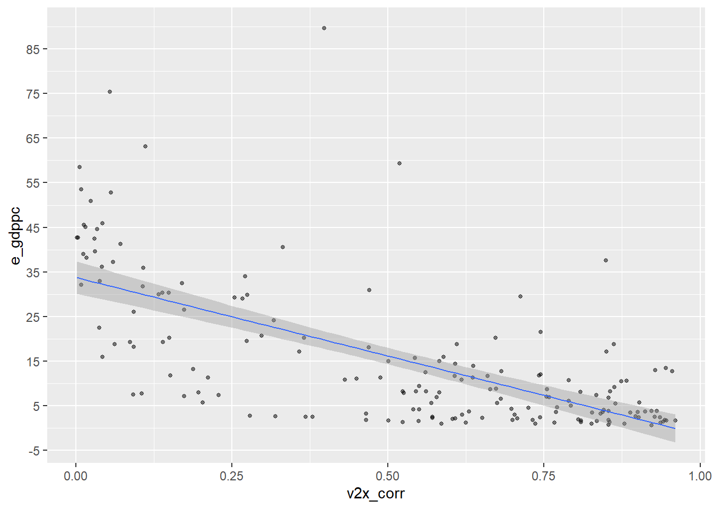
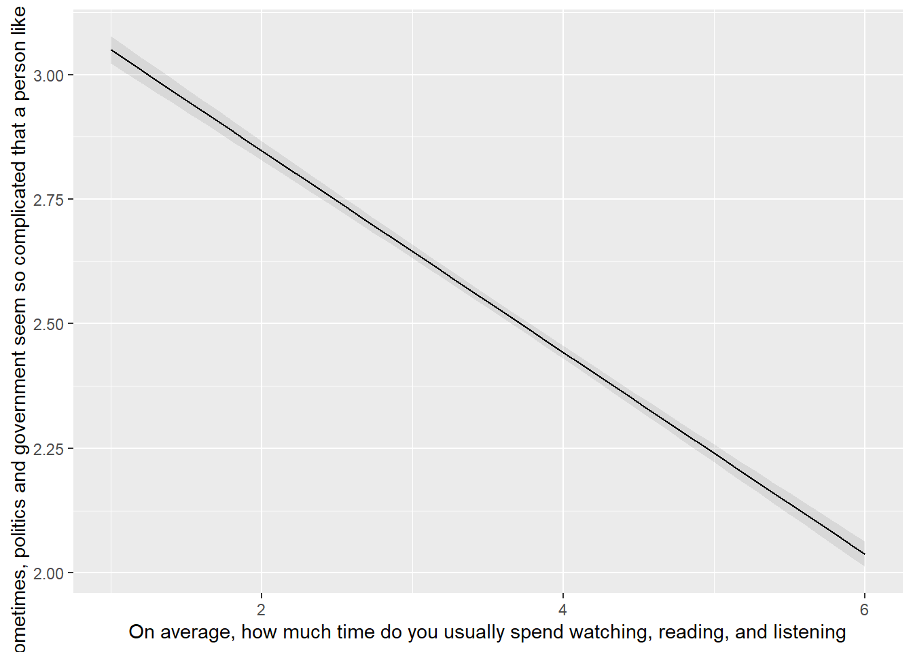
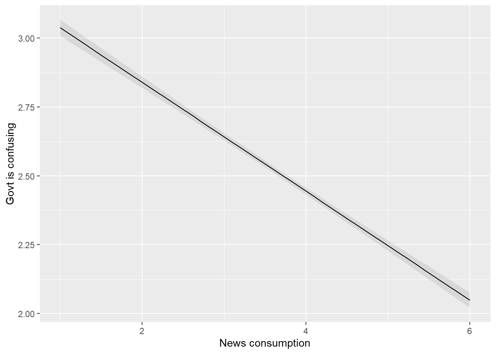

Chapter 8 Communicating results
Week 9 tutorial goals:
* Regression tables
* Model predictions – plot_predictions()
* Save tables and figures
8.1 Set-up
Make sure you have your project datasets and W9.R
This week uses two files from your Project folder. They must be in these folders inside your R project folder:
- V-Dem:
Project/VDem/vdem2000_2023.csv - CES 2025:
Project/CES2025/2025 Canadian Election Study v1.dta
8.2 VDem
my_vars <- c("country_name", "country_id", "year",
"v2x_corr","e_gdppc")
vdem_selected <- read.csv("Project/VDem/vdem2000_2023.csv") |>
select(all_of(my_vars)) |>
filter(year==2009) Regression line
ggplot(data=vdem_selected,aes(x=v2x_corr,y=e_gdppc)) +
geom_point(size=1,alpha=.5) +
geom_smooth(method="lm",linewidth=.5) + # linear model, i.e. linear regression; linewidth sets the thickness of the line
scale_y_continuous(breaks=c(seq(-5,100,by=10)))
Regression table
Table using modelsummary
In Week 6, we used model_parameters() to read regression results. modelsummary() from the package modelsummary makes a regression table that is ready to put in a paper.
corruption_model <- lm(e_gdppc ~ v2x_corr, data = vdem_selected)
modelsummary(corruption_model, stars=TRUE)| (1) | |
|---|---|
| + p < 0.1, * p < 0.05, ** p < 0.01, *** p < 0.001 | |
| (Intercept) | 33.817*** |
| (1.828) | |
| v2x_corr | -35.263*** |
| (3.008) | |
| Num.Obs. | 173 |
| R2 | 0.446 |
| R2 Adj. | 0.442 |
| AIC | 1360.9 |
| BIC | 1370.3 |
| Log.Lik. | -677.441 |
| F | 137.441 |
| RMSE | 12.14 |
Goodness-of-fit statistics
## aic bic r.squared adj.r.squared rmse nobs F logLik
## 1 1360.881 1370.341 0.4455993 0.4423572 12.14483 173 137.4412 -677.4406Select relevant statistics
- Keep only “number of observations”, “R-squared”, and “adjusted R-squared” values
modelsummary(corruption_model,
stars=TRUE,
gof_map=c("nobs","r.squared","adj.r.squared")) # select relevant goodness-of-fit statistics| (1) | |
|---|---|
| + p < 0.1, * p < 0.05, ** p < 0.01, *** p < 0.001 | |
| (Intercept) | 33.817*** |
| (1.828) | |
| v2x_corr | -35.263*** |
| (3.008) | |
| Num.Obs. | 173 |
| R2 | 0.446 |
| R2 Adj. | 0.442 |
Relabel
modelsummary(list("Base"=corruption_model), # list allows me to name the models
stars=TRUE,
gof_map=c("nobs","r.squared","adj.r.squared"),
coef_map=c("v2x_corr"="Corruption Index",
"(Intercept)"="Intercept"), # rename and order coefficients
title="GDP per capita and corruption")| Base | |
|---|---|
| + p < 0.1, * p < 0.05, ** p < 0.01, *** p < 0.001 | |
| Corruption Index | -35.263*** |
| (3.008) | |
| Intercept | 33.817*** |
| (1.828) | |
| Num.Obs. | 173 |
| R2 | 0.446 |
| R2 Adj. | 0.442 |
Now interpret: what does this mean?
8.3 Canadian Election Study 2025
my_vars <- c("cps25_age_in_years","cps25_news_cons","cps25_govt_confusing") #news consumption and internal political efficacy
ces_selected <- read_dta("Project/CES2025/2025 Canadian Election Study v1.dta") |>
select(all_of(my_vars))Set “don’t know” to NA
Same as Week 7: use if_else() to make new variables, and keep them in the same data frame.
Check the new variables
tab_xtab(var.row = ces_selected$cps25_govt_confusing,
var.col = ces_selected$govt_confusing,
show.na = TRUE) # show NAs, so we can see the 5s became NA|
Sometimes, politics and government seem so complicated that a person like me can |
Sometimes, politics and government seem so complicated that a person like me can |
Total | ||||
|---|---|---|---|---|---|---|
|
|
|
|
NA | ||
|
3194 | 0 | 0 | 0 | 0 | 3194 |
|
0 | 5606 | 0 | 0 | 0 | 5606 |
|
0 | 0 | 8134 | 0 | 0 | 8134 |
|
0 | 0 | 0 | 2629 | 0 | 2629 |
|
0 | 0 | 0 | 0 | 617 | 617 |
| NA | 0 | 0 | 0 | 0 | 0 | 0 |
| Total | 3194 | 5606 | 8134 | 2629 | 617 | 20180 | χ2=NaN · df=12 · Cramer’s V=NaN · Fisher’s p=0.000 |
lm() leaves out NAs automatically (Week 6), so we don’t need to remove them first.
Regression table
news_model <- lm(govt_confusing ~ news_cons, data = ces_selected) # model 1
modelsummary(list("Base"=news_model),
stars=TRUE,
gof_map=c("nobs","r.squared","adj.r.squared"),
coef_map=c("news_cons"="News Consumption",
"(Intercept)"="Intercept"), # rename and order coefficients
title="Gov Confusing")| Base | |
|---|---|
| + p < 0.1, * p < 0.05, ** p < 0.01, *** p < 0.001 | |
| News Consumption | -0.202*** |
| (0.005) | |
| Intercept | 3.252*** |
| (0.018) | |
| Num.Obs. | 19428 |
| R2 | 0.086 |
| R2 Adj. | 0.086 |
Now interpret: what does this mean?
Controls
news_age_model <- lm(govt_confusing ~ news_cons + cps25_age_in_years, data = ces_selected) # model 2
modelsummary(list("Base" = news_model,
"w/ Controls" = news_age_model),
stars=TRUE,
gof_map=c("nobs","r.squared","adj.r.squared"),
coef_map=c("news_cons"="News Consumption",
"cps25_age_in_years" = "Age",
"(Intercept)"="Intercept"), # rename and order coefficients
title="Gov Confusing")| Base | w/ Controls | |
|---|---|---|
| + p < 0.1, * p < 0.05, ** p < 0.01, *** p < 0.001 | ||
| News Consumption | -0.202*** | -0.198*** |
| (0.005) | (0.005) | |
| Age | -0.001* | |
| (0.000) | ||
| Intercept | 3.252*** | 3.276*** |
| (0.018) | (0.022) | |
| Num.Obs. | 19428 | 19428 |
| R2 | 0.086 | 0.086 |
| R2 Adj. | 0.086 | 0.086 |
Now interpret: what does this mean?
Model predictions – plot_predictions()
plot_predictions() from the package marginaleffects shows the predicted value of the dependent variable at each value of the independent variable. The condition argument is the variable on the x-axis.

The same plot for the model with controls.
We also add nicer axis labels. plot_predictions() makes a ggplot, so we can add labels with +, the same as before.
plot_predictions(news_age_model, condition = "news_cons") +
xlab("News consumption") +
ylab("Govt is confusing")
Now interpret: what does this mean?
Save output
modelsummary(list("Base" = news_model,
"w/ Controls" = news_age_model),
stars=TRUE,
gof_map=c("nobs","r.squared","adj.r.squared"),
coef_map=c("news_cons"="News Consumption",
"cps25_age_in_years" = "Age",
"(Intercept)"="Intercept"), # rename and order coefficients
title="Gov Confusing",
output="ces.docx")8.4 Credits
- This lesson uses data from
- Varieties of Democracy (V-Dem) Project. V-Dem Dataset.
- Stephenson, Laura B., Allison Harell, and Daniel Rubenson. 2025 Canadian Election Study (CES). [dataset]